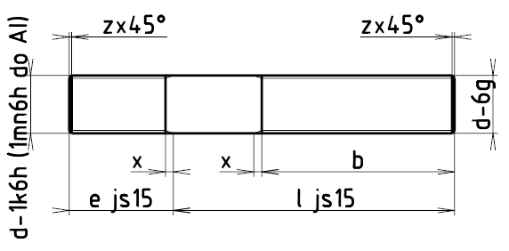

Příklad označení závrtného šroubu do oceli se závitem M12, s délkou l = 50 mm, třídy pevnosti 5 z oceli 11 110, bez povrchové úpravy:
ŠROUB M12×50 ČSN 02 1174.20
Příklad označení závrtného šroubu do šedé litiny se závitem M12, s délkou l = 50 mm, třídy pevnosti 5 z oceli 11 110, bez povrchové úpravy:
ŠROUB M12×50 ČSN 02 1176.20
Příklad označení závrtného šroubu do slitiny hliníku apod. se závitem M12, s délkou l = 50 mm, třídy pevnosti 5 z oceli 11 110, bez povrchové úpravy:
ŠROUB M12×50 ČSN 02 1178.20